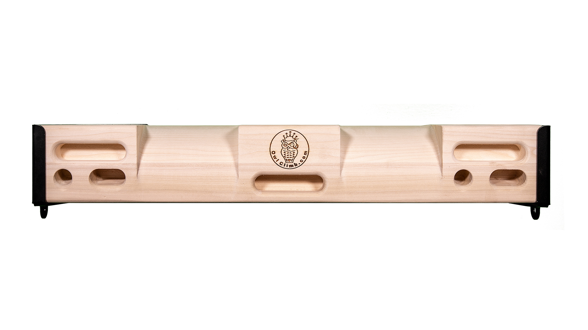
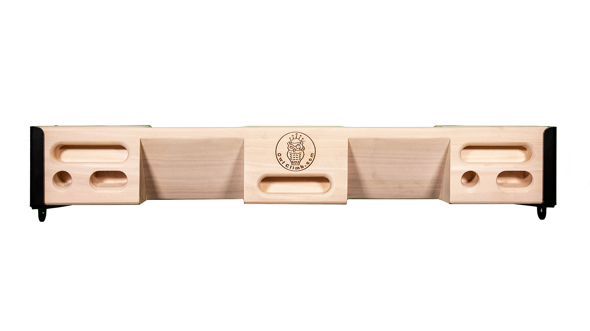
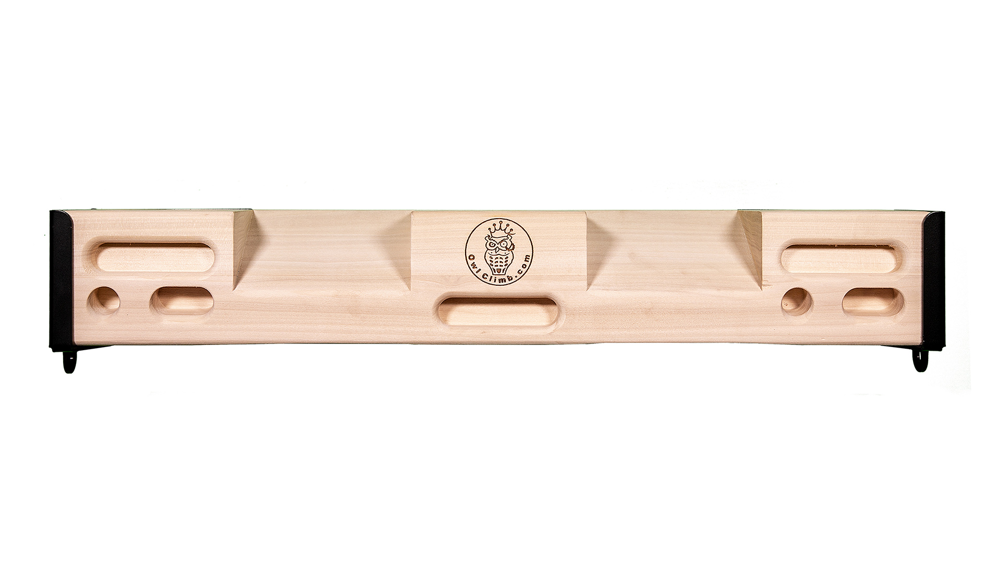
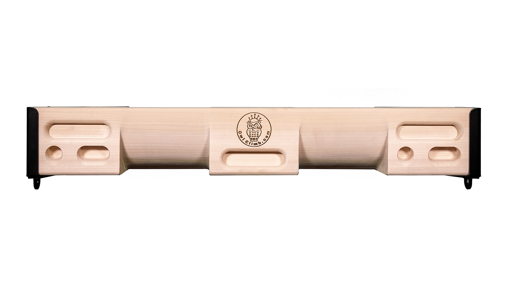

1. owl-climb-poker-face-a.jpg


OP-PHOTO-0 exact manufacturer face A
SHA-256 4bae58b408b3f3a82c524b1101079eafa01cd062c398cb203d4803fce9850eab
approved exact set in batch-04 design
Four exact approved 2019 manufacturer photos establish all four faces, repeated mono/duo end sequences and the two deep rounded Face D recesses. Preserve all 34 physical contacts. Mounting hardware is omitted; no suspension is documented.
Source packet; historical exact set reused. No CAD geometry authored.

OP-PHOTO-0 exact manufacturer face A
SHA-256 4bae58b408b3f3a82c524b1101079eafa01cd062c398cb203d4803fce9850eab
approved exact set in batch-04 design

OP-PHOTO-1 exact manufacturer face B
SHA-256 0c1d54cb2bc4d8e7fa285f3053b927d7c1a1b3fbafdf0b5d7aface9c82d0dbad
approved exact set in batch-04 design

OP-PHOTO-2 exact manufacturer face C
SHA-256 5fbff79f31db8e85d078a74eb629abd069fc276ac128b3d85a84fc15ad9f1c4e
approved exact set in batch-04 design

OP-PHOTO-3 exact manufacturer face D
SHA-256 ae39598fbf75c0e4e4dfbb599c724ff1e2531ef12ecca84b3504805e7bc3af13
approved exact set in batch-04 design